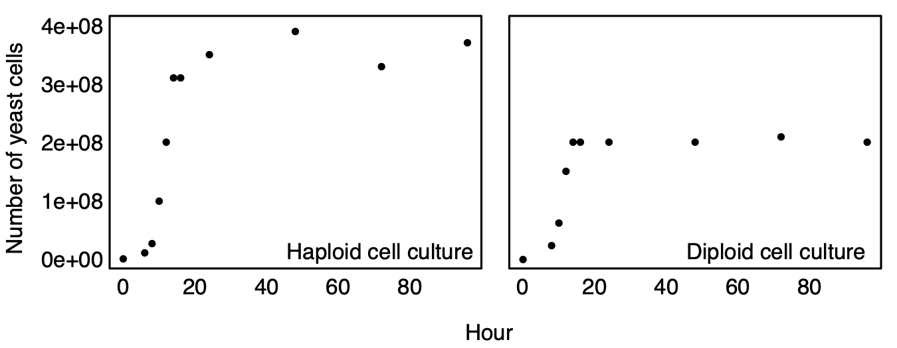
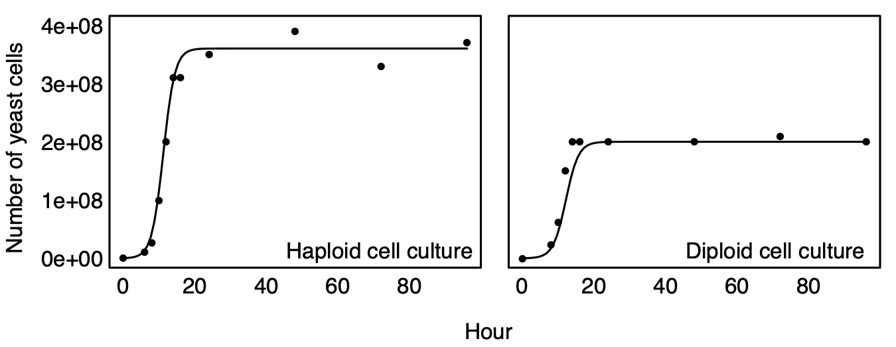

Lecture 2: Exponential & Logistic Growth
Lecture overview
- Introduction
- Density-independent and density-dependent population growth
- Exponential growth
- Logistic growth
- An example of logistic growth
1. Introduction
In 1937, two cocks and six hen pheasants were introduced onto an island off the coast of Washington. Over the next five years the population experienced exponential growth (Lack 1954).
2. Density-independent and density-dependent population growth
Population abundances change over time in response to: - food/resource availability - weather - competition - predation - disease
The simplest models describing population size are exponential growth and logistic growth which assume: - constant food/resource availability - a constant environment - no competition with other species - no predation - no disease
The exponential model also assumes no competition among the members of a species for the available resources (density-independent), while the logistic model includes competition within a species (density-dependent).
Both of these models can also be described by equations both in discrete and continuous time.
We’ll start with the exponential model.
3. Exponential growth
Exponential growth in discrete time
Imagine we start with \(N[t]\) individuals at some time t.
If we assume that each of these individuals produces \(b\) offspring, on average then
(3a)
If we then assume each individual has probability \(d\) of dying
(3b)
Then the expected number of individuals in the next generation, N[t + 1], is:
(3c)
where \((1 +\) \(b\)\()(1 −\) \(d\)\()\) is a constant term referred to as the reproductive factor and often denoted \(R\).
(3d)
Equation (3d) is known as a recursion equation for exponential growth.
We can also describe the change in the expected number of individuals as
(3e)
Equation (3e) is known as a difference equation with growth rate \(r_d =\) \(R\) \(- 1 =\) \(b\) \(-\) \(d\) \(-\) \(b\)\(d\).
import numpy as np
import matplotlib.pyplot as plt
def exponential_discrete(Nt, b, d):
return Nt * (1 + b) * (1 - d)
# Grow population
N, Nt, b, d = [], 1, 0.2, 0.1
for t in np.arange(0,100):
Nt = exponential_discrete(Nt, b, d)
N.append(Nt)
# Plot growth
fig, ax = plt.subplots()
ax.plot(np.arange(0, 100), N)
ax.set_xlabel('Time, t')
ax.set_ylabel('Population size, N')
Exponential growth in continuous time
Now assume that each individual gives birth at a constant rate, b, and dies at a constant rate, d.
If there are \(N[t]\) individuals in the population at time t, then the rate of change in the number of individuals will be:
(3f)
Equation (3f) describes a differential equation for exponential growth with growth rate \(r_c =\) \(b\) \(-\) \(d\).
Note that the growth rate in the discrete-time model (3e) was \(r_d =\) \(b\) \(-\) \(d\) \(-\) \(b\)\(d\).
This difference reflects the fact that birth and death cannot happen at the exact same time in the continuous-time model (so there is no bd term), while offspring that are born can die before the next generation in the discrete-time model.
We’ll see more of these two models in the coming lectures.
The trouble with exponential growth
Exponential growth cannot continue indefinitely.
Had the pheasants (noted in the Introduction) continued to grow exponentially, there would have been 7 million of them by the year 1950 and 1028 by now – which at 2 kg per pheasant is 3000 times the mass of the earth!!
In fact, Lack observed that “the figures suggest that the increase was slowing down and was about to cease, but at this point the island was occupied by the military and many of the birds shot.”
Although populations may initially experience exponential growth, resources eventually become depleted and competition becomes more severe.
This suggests that we should change our assumptions.
4. Logistic growth
Logistic growth in discrete time
Exponential growth assumed the growth rate (\(r_d\), \(r_c\)) was constant, but this may depend on population size in any number of ways.
Logistic growth assumes that the growth rate decreases linearly with population size. In discrete-time, the reproductive factor is
(4a)
Notice that a parent has on average, one offspring if \(r = 0\) or if \((1 - N[t]/K) = 0\). The latter holds when \(N[t] = K\).
# Reproductive factor for logistic growth
def logistic_discrete(Nt: int, r: float, k: int):
return 1 + r * (1 - Nt/K)
# Compare a few different growth rates and carrying capacities
fig, ax = plt.subplots()
for r, K in zip([1, 2, 1], [100, 100, 50]):
Nt = np.linspace(0, 200)
n_offspring_per_parent = logistic_discrete(Nt, r, K)
ax.plot(Nt, n_offspring_per_parent, label=f"r = {r}, K = {K}")
ax.set_xlabel('Population size, $N_t$')
ax.set_ylabel('Number of offspring per parent')
ax.legend(frameon=False)
\(r\) is known as the intrinsic rate of growth, because it measures whether the population tends to grow (r > 0) or shrink (r < 0).
\(K\) is known as the carrying capacity, because it measures the population size at which the population produces exactly enough offspring to just replace itself.
The population size in the next generation is the expected number of offspring per parent times the the total number of parents.
(4b)
Equation (4b) is the recursion equation for logistic growth.
This recursion is:
- a function of two parameters (\(r, K\))
- a non-linear function of one variable (\(N[t]\)) (non-linear means that there is a term in the equation where the variable is taken to some power other than 1)
The change in population size from one generation to the next, \(\Delta N\), is given by
(4c)
When will the population grow in size?
# Initialize parameters
N, Nt, r, K = [], 1, 0.1, 100
# Grow population under logistic growth
for t in np.arange(0, 100):
Nt = Nt * logistic_discrete(Nt, r, K)
N.append(Nt)
# Plot growth
fig, ax = plt.subplots()
ax.plot(np.arange(0, 100), N, linestyle='dotted', linewidth=3, color='blue')
ax.axhline(100, label=f"K = {K}", linestyle='dotted', linewidth=3, color='red')
ax.set_ylim(0,K+20)
# Add annotations
ax.annotate(f"K = {K}", xy=(1,K+K*0.05), fontsize=14, color='red')
ax.annotate(f"$N_t$ << $K$", xy=(0,K*0.2), fontsize=14, color='blue')
ax.annotate(f"$N_t$ ~ $K$", xy=(80,K-K*0.2), fontsize=14, color='blue')
ax.set_xlabel('Time, $t$')
ax.set_ylabel('Population size, $N$')
Logistic growth in continuous time
The model of logistic growth in continuous time, as with discrete time, follows from the assumption that each individual has a growth rate that decreases as a linear function of the population size.
(4d)
If there are \(N[t]\) individuals in the population at time \(t\), then the rate of change of the population size will be:
(4e)
Equation (4e) is a differential equation.
Note logistic growth (4e) reduces to the exponential growth model (3f) \(dN[t]/dt = rN[t]\) as \(N[t]/K\) approaches 0 i.e when \(K >> N[t]\) when the population size is much smaller than carrying capacity.
5. An example of logistic growth
Dr. Otto cultured haploid and diploid populations of Saccharomyces cereviseae. She observed the following growth for the two types of cells:

Although the population grows nearly exponentially at first, growth decreases as the population size increases (density-dependent growth is observed).
The equilibrium population size (K) is larger for the haploid cells, but do haploid and diploid cells have different intrinsic rates of increase (r)?
By fitting the logistic equation to the data:
- Haploid: r = 0.55, K = 3.7 x 10^8
- Diploid: r = 0.55, K = 2.3 x 10^8
The growth rates therefore do not differ (statistically). With these parameter estimates, the logistic model nicely fits the data:

Note: This may be a bit misleading, as such excellent model fits are rarely observed, especially outside the lab!